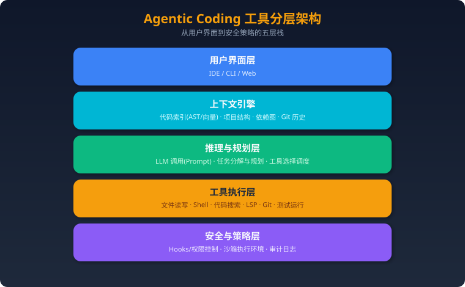

工程化与 Harness
更新时间：2026-09-11 定位：补充本仓库已有 RAG、MCP、Context Engineering、Agent Harness 内容中尚未系统展开的生产级考点。 使用方式：先读概念和设计框架，再用文末问题进行项目追问演练。
一、为什么这些内容成为新考点
早期 Agent 面试更关注 ReAct、RAG、Function Calling 和框架 API。2026 年的大厂面试开始把重点放到一个更难的问题：
当 Agent 需要运行几十分钟甚至数小时、调用多个有副作用的工具、并发修改共享资源时，怎样保证它可恢复、可审计、可评估，而且不会重复执行危险操作？
因此，面试官不只问“Agent 能不能做”，还会继续追问：
- 为什么需要独立的 Runtime 或 Harness？
- 模型、编排器、状态存储和工具执行器分别负责什么？
- Agent 中断后从哪里恢复？恢复后会不会重复发邮件、扣款或提交代码？
- 如何发现路径震荡、无效重试和工具调用死循环？
- 当工具数量从 10 个增长到 1000 个时，如何控制上下文和选错工具的概率？
- 如何证明系统真的变好，而不是 Demo 看起来更流畅？
二、Agent、Orchestrator、Harness 与 Runtime 的边界
2.1 四个概念不要混用
| 概念 | 核心职责 | 不应该负责 |
|---|---|---|
| Agent | 根据目标和上下文做决策 | 直接承担持久化、资源隔离和审计 |
| Orchestrator | 拆分任务、分派执行单元、处理依赖关系 | 替模型完成所有语义决策 |
| Harness | 包装模型与工具循环，提供审批、上下文、工具和执行约束 | 替代业务工作流引擎 |
| Runtime | 管理任务生命周期、状态、队列、恢复、资源和事件 | 把所有业务规则硬编码进基础设施 |
可以把它们理解为：
用户目标
↓
Orchestrator：任务图、依赖、分派
↓
Agent / Harness：推理、工具选择、上下文与策略
↓
Runtime：调度、状态、超时、重试、恢复、资源隔离
↓
Tool Executor：真正产生外部副作用
2.2 为什么不能只靠 LangGraph 或一个 while 循环
一个简单循环可以完成短任务：
while not done:
action = model(messages, tools)
observation = execute(action)
messages.append(observation)
但生产环境还必须解决：
- 进程重启后任务状态是否还在；
- 工具调用超时时，究竟是“没有执行”还是“执行成功但响应丢失”；
- 同一个任务被两个 Worker 消费时如何去重；
- 人工审批等待数小时后如何继续；
- 模型版本、Prompt、工具 Schema 变化后如何回放；
- 子 Agent 部分成功、部分失败时如何补偿。
因此，框架解决“怎样表达流程”，Runtime 解决“怎样可靠地运行流程”。
三、Durable Execution：可恢复的长任务执行
3.1 最小持久化状态
不要只保存聊天记录。一个可恢复任务至少需要：
{
"task_id": "task-123",
"run_id": "run-7",
"status": "WAITING_APPROVAL",
"current_step": "submit_payment",
"context_version": 12,
"plan_version": 3,
"tool_calls": [],
"artifacts": [],
"checkpoint_id": "cp-42",
"lease_owner": "worker-5",
"lease_expires_at": "2026-09-11T10:30:00Z"
}
关键点：
task_id表示用户任务，run_id表示一次执行尝试；checkpoint_id必须对应一个可重放的稳定边界；lease防止多个 Worker 同时推进同一任务；- Artifact 应外置保存，不要全部塞进消息历史；
- 所有状态转换都应产生事件，而不是只覆盖最终状态。
3.2 Checkpoint 不等于保存 messages
合格的 Checkpoint 应同时记录：
- 当前状态机节点；
- 已完成步骤及其输出摘要；
- 外部 Artifact 的引用和版本；
- 已执行工具调用的幂等键；
- 下一步允许执行的动作；
- 当时使用的模型、Prompt、工具 Schema 版本。
只保存 messages 会遇到两个问题：
- 无法确定哪些副作用已经发生；
- 恢复时只能让模型“猜”接下来该做什么。
3.3 Exactly-once 通常做不到
分布式系统中很难保证工具调用真正 Exactly-once。更实际的设计是：
At-least-once delivery
+
Idempotency key
+
Result journal
+
Compensation
例如支付工具：
- Runtime 生成
tool_call_id； - 调用支付服务时同时发送该 ID；
- 支付服务保存 ID 和执行结果；
- 超时重试时返回第一次结果；
- 如果操作不能幂等，则提供撤销或补偿动作。
3.4 推荐状态机
PENDING
→ RUNNING
→ WAITING_TOOL
→ WAITING_APPROVAL
→ RUNNING
→ VERIFYING
→ COMPLETED
异常分支：
RUNNING → RETRYABLE_FAILED → RUNNING
RUNNING → BLOCKED
RUNNING → COMPENSATING → FAILED
面试时应强调：FAILED、BLOCKED 和 WAITING_APPROVAL 是三种不同状态，不能统统记成失败。
四、路径震荡、死循环与无效重试
4.1 什么是路径震荡
路径震荡指 Agent 在两个或多个策略之间反复切换，却没有产生新的有效信息。例如：
搜索代码 → 尝试修改 → 测试失败
→ 回退修改 → 再次搜索相同文件
→ 重复之前的修改 → 再次失败
它与普通重试的区别是：
- 普通重试通常因为瞬时错误；
- 路径震荡是决策层没有吸收失败证据。
4.2 检测方法
可以组合使用：
- 相同工具与参数的重复率；
- 连续状态摘要的相似度；
- Artifact 是否发生有效变化；
- 相同错误指纹是否重复出现；
- 单位 Token 带来的进展；
- 计划节点是否在有限集合内来回跳转。
一个简单的震荡分数：
oscillation_score =
0.35 × repeated_action_ratio
+ 0.25 × state_similarity
+ 0.20 × repeated_error_ratio
+ 0.20 × no_progress_ratio
超过阈值后，不应只是继续增加 max_iterations，而应触发：
- 强制总结已有证据；
- 禁止重复最近动作；
- 请求替代计划；
- 切换模型或子 Agent；
- 必要时转人工处理。
4.3 失败预算
| 预算 | 示例 |
|---|---|
| 总迭代次数 | 最多 30 轮 |
| 相同动作次数 | 同工具同参数最多 2 次 |
| 连续无进展次数 | 最多 3 次 |
| Token | 200k |
| 金额 | 5 美元 |
| 墙钟时间 | 45 分钟 |
| 高风险工具调用 | 最多 1 次且必须审批 |
预算耗尽后应生成失败报告和恢复建议，而不是只返回“达到最大轮次”。
五、从 10 个工具扩展到 1000 个工具
5.1 为什么不能把所有工具定义都放进 Prompt
工具数量增长会带来：
- Prompt Token 成本快速增加；
- 相似工具之间更容易误选；
- Schema 变更污染缓存；
- 模型注意力被无关工具分散；
- 权限控制难以解释。
5.2 分层工具路由
推荐四层结构：
用户意图
↓
领域路由：代码 / 数据 / CRM / 财务
↓
候选工具检索：关键词 + Embedding + 权限过滤
↓
Schema 精排：参数匹配、风险、成本、历史成功率
↓
模型从 Top-K 中选择并调用
注意顺序：先做权限过滤，再把工具暴露给模型。不能让模型看到无权调用的工具，然后依赖 Prompt 要求它“不要使用”。
5.3 Skill 的渐进式披露
Skill 不应等于一段超长 Prompt。可以拆成三层：
- Manifest：名称、用途、适用条件、风险等级；
- Instructions：被选中后才加载详细步骤；
- Resources：示例、脚本、模板按需加载。
这既减少上下文，也能让版本、权限和审核边界更清楚。
5.4 工具 Schema 版本化
至少记录：
tool_nameschema_versionrisk_levelrequired_scopestimeoutretry_policyidempotency_support
工具升级时要支持旧任务恢复，不能假设所有运行中的任务都会立刻使用新 Schema。
六、Agent 可观测性：从日志升级为 Trace
6.1 一条 Trace 应该包含什么
Task
├─ Run
│ ├─ Model Span
│ ├─ Retrieval Span
│ ├─ Tool Span
│ ├─ Approval Span
│ └─ Verification Span
└─ Artifacts / Events / Checkpoints
每个 Span 至少记录：
- 输入输出摘要和哈希；
- 模型、Prompt、工具版本；
- Token、延迟、成本；
- 重试次数和错误类型；
- 决策原因或路由标签；
- 是否产生副作用；
- 关联的 Artifact 和 Checkpoint。
敏感输入不应原样进入日志，应进行脱敏、分级存储和访问审计。
6.2 线上排障顺序
当任务失败时，按层定位：
- 输入层：目标是否清晰、权限是否充足；
- 规划层：任务拆分是否错误；
- 上下文层：关键信息是否被截断或污染；
- 检索层：是否召回错误、过期或相互冲突的资料；
- 工具层：参数、权限、超时、Schema 是否正确；
- 模型层：是否理解错误或违反输出约束；
- 验证层：成功条件是否太弱，导致假完成；
- Runtime 层：是否发生重复消费、恢复错误或状态竞争。
七、2026 年应掌握的 Agent 评测指标
7.1 任务结果
- Task Success Rate：最终完成率；
- First-pass Success Rate：不重试一次完成率；
- Verified Success Rate：经过独立检查后确认的完成率；
- Partial Completion Rate：部分交付比例。
7.2 过程质量
- 平均计划修改次数；
- 工具选择准确率；
- 无效工具调用率；
- 路径震荡率；
- 人工接管率；
- Recovery Success Rate。
7.3 成本和性能
- 单任务 Token 和金额；
- P50/P95 完成时间；
- 模型调用与工具调用占比；
- 上下文压缩率；
- 缓存命中率。
7.4 安全
- 未授权工具调用数；
- Prompt Injection 攻击成功率；
- 敏感数据泄露率；
- 高风险操作审批覆盖率；
- 沙箱逃逸或策略违规数。
7.5 评测集构建
评测集至少包含：
- 正常路径；
- 缺少必要信息；
- 工具超时和部分失败；
- 工具返回冲突数据；
- 上下文超长；
- Prompt Injection；
- 需要人工审批；
- 中途重启和恢复；
- 同一任务并发执行。
要保留失败案例，不要只用成功 Demo 构建评测集。
八、Coding Agent 的并发修改冲突
8.1 常见冲突
- 两个 Agent 同时修改同一文件；
- 一个 Agent 修改接口，另一个仍按旧接口实现；
- 测试 Agent 在代码尚未稳定时读取中间状态；
- 多个 Agent 共享同一个未提交工作区；
- 主 Agent 合并结果时丢失子 Agent 的约束和失败证据。
8.2 推荐隔离策略
Task Contract
↓
为每个子任务创建独立工作区或 worktree
↓
限制允许修改的路径
↓
每个子任务产出补丁 + 验证证据
↓
由集成者按依赖顺序合并
↓
重新运行全量验证
关键原则：
- 共享 Artifact，不共享可变工作区；
- 子 Agent 返回结构化结果，而不只是自然语言“完成了”；
- 合并成功不等于功能验证成功；
- 冲突解决必须保留原始需求和测试证据。
九、近期大厂面试新增信号
下列内容来自公开面经的题目归纳，只作为备考线索，不代表公司固定题库。
字节跳动：Harness、长任务与 Coding Agent
近期公开面经新增关注：
- Harness 和 Orchestrator 的边界；
- Agent 路径震荡和失败归因；
- 上下文超过窗口后的分层压缩；
- 大量工具下的检索和路由；
- 多 Agent 同时修改代码的冲突；
- Coding Agent 的单测、覆盖率与质量门禁；
- 高并发 Agent 服务的容量和降级设计。
准备时不能只背框架 API，应能画出任务、Run、Checkpoint、Tool Call 和 Artifact 的数据关系。
阿里 / 淘天：MCP 评测、Trace 与 Agent Infra
近期公开题目新增关注：
- 一个 MCP Server 开发完成后怎样评测；
- Agent 链路追踪和对话历史如何保存；
- LangGraph State、Memory、Checkpoint 的边界；
- Max Tokens 中断后如何续跑；
- 评测集如何产生并防止数据污染；
- Skill 如何渐进式加载；
- Agent 应用与推理服务的延迟、KV Cache 和批处理。
准备时要把“应用层 Agent”和“模型推理基础设施”串起来回答。
腾讯：失败恢复、幂等和金融安全
近期公开题目重点包括：
- Agent 中断后如何恢复；
- 工具超时后怎样判断是否已经成功执行；
- 重试如何避免重复扣款或重复提交；
- 多 Agent 风控流程如何设置权限和人工审批；
- RAG 知识库如何不停机更新；
- 如何设计可回滚、可补偿的执行链。
这类题目的核心不是“多试几次”，而是副作用、审计和责任边界。
美团：框架取舍、评测闭环和沙箱
近期公开题目重点包括：
- 什么场景不应该使用 LangGraph；
- Workflow 与自主 Agent 的边界；
- 为什么自研，而不是直接使用现成 Coding Agent；
- 怎样构建离线评测集；
- 如何采集 Trace 并定位 bad case；
- 工具执行为什么需要沙箱；
- 如何同时优化完成率、延迟和 Token 成本。
准备时应给出基线、失败案例、改动和指标，而不是只讲系统架构图。
十、面试回答模板
回答生产级 Agent 系统设计题时，可以使用下面的顺序：
1. 目标：Agent 要完成什么，成功条件是什么
2. 约束：时延、成本、安全、权限、并发、数据边界
3. 架构：Agent / Orchestrator / Runtime / Tool / State
4. 状态：Task、Run、Event、Checkpoint、Artifact
5. 可靠性：超时、重试、幂等、补偿、恢复
6. 安全：权限、审批、沙箱、审计
7. 评测：离线集、线上指标、失败案例
8. 演进：先做单 Agent 基线，再证明是否需要多 Agent
避免只回答“我们用了 LangGraph、MCP 和向量数据库”。面试官真正想知道的是：为什么这样选、失败时发生什么、怎样证明它有效。
十一、高频自测题
- Agent、Orchestrator、Harness 和 Runtime 有什么区别？
- 为什么 Checkpoint 不能只保存消息历史？
- 工具调用超时后，怎样判断是否可以安全重试？
- 为什么 Exactly-once 很难？Agent 系统通常怎样近似实现？
- 如何发现 Agent 正在路径震荡而不是正常探索？
max_iterations为什么不能彻底解决死循环？- 1000 个工具为什么不能全部放进 Prompt？
- 工具检索为什么必须先做权限过滤？
- Skill 的 Manifest、Instructions 和 Resources 怎样按需加载？
- 工具 Schema 升级后，旧任务怎样恢复？
- 一条 Agent Trace 应包含哪些 Span？
- Task Success 和 Verified Success 有什么区别？
- 怎样构建包含恢复、越权和注入攻击的评测集？
- 多个 Coding Agent 修改同一仓库时怎样避免冲突？
- 为什么应当先证明单 Agent 的不足，再引入多 Agent？
十二、公开面经来源
来源分级建议：带明确轮次、日期和个人项目过程的一手复盘优先级最高；汇总型文章只用于发现题目趋势；带课程销售和“标准满分答案”的内容不可作为唯一证据。
关联阅读
- Agent Harness 与编码代理深度测评
- Context Engineering 上下文工程
- Agent 安全与评估体系
- MCP 与工具生态
- 最新 AI Agent / 大模型面经索引
面试必备：市面主流 Agent Harness / 编码代理（OpenAI Codex CLI、Claude Code、LangGraph、OpenHands、CrewAI、AutoGen）的定位、架构、安全边界、源码入口与动手练习。 每个知识点按「要求 → 知识 → 源码入口 → 动手练习 → 掌握标准」组织，源码路径以 2026-08 各仓库 main 分支为准，版本迭代后可能漂移，请以实际仓库为准。
一、为什么面试要研究 Harness
面试考察的不只是模型能力，还有工具调用、上下文管理、记忆、评估与安全边界——这些能力全部"长在" Harness 里。模型决定"能不能"，Harness 决定"是否可用、可控、可审计"。
| 能力要求 | 对应知识 | 掌握标准 |
|---|---|---|
| 讲清 agent 如何自主完成多步任务 | agent loop | 能画出「规划 → 工具调用 → 观察 → 修正」循环，并指出任一框架的实现位置 |
| 讲清工具如何被模型调用 | 工具 schema、function calling、MCP | 能对比「原生工具 / MCP 工具」接入方式与校验流程 |
| 讲清长任务如何不丢失上下文 | 上下文压缩、摘要、token budget | 能解释压缩触发时机与信息损失权衡 |
| 讲清 agent 如何记住状态 | 会话记忆、checkpoint、持久记忆 | 能区分会话级与持久级记忆，并说出实现机制 |
| 讲清 agent 的安全边界 | 审批、沙箱、命令白名单、审计 | 能区分「信任标记」与「真沙箱」，并给出攻击面 |
| 讲清如何衡量 agent 好坏 | benchmark、评估集、可观测性 | 能说出至少 2 个 benchmark 与 2 种轨迹观测手段 |
二、共同考察点（七个必考维度）
1. Agent Loop（agent 循环）
- 要求：解释一个 agent 为什么能自主完成多步任务，而不是单次问答。
- 知识：循环 = 规划（把任务拆成步骤）→ 工具调用（模型输出结构化工具请求）→ 观察（执行结果回填）→ 修正（依据结果调整下一步），直到满足终止条件。工程上还包含：重试与错误恢复、最大迭代上限、循环守卫（防止死循环）。
- 源码入口：
- OpenAI Codex CLI：
codex-rs/core/src/agent/（turn 控制、agent registry） - Claude Code：
src/Task.ts（任务态）+src/query/（每轮查询与 token 预算） - LangGraph：
langgraph/pregel/（superstep 图执行运行时） - 动手练习：跑一个 Codex CLI 会话，记录一次任务里"模型响应 → 工具执行 → 结果回填"发生了多少次、失败后如何重试。
- 掌握标准：能讲清"一次 turn 内模型响应 → 工具执行 → 观察结果 → 下一轮"的完整链路，并能指出至少一个循环守卫（迭代上限 / 退出条件）。
2. 工具调用（Tool Calling）
- 要求：讲清模型如何"调用"工具，以及工具失败时 agent 如何恢复。
- 知识：模型输出结构化工具请求（JSON schema 对齐），运行时校验参数、执行、返回结果；工具注册表统一 schema；错误可回灌给模型让它修正参数或换工具。MCP（Model Context Protocol）把工具做成标准化 server，
tools/list/tools/call两个原语。 - 源码入口：
- OpenAI Codex CLI：
codex-rs/core/src/function_tool.rs、codex-rs/core/src/mcp.rs - Claude Code：
src/tools.ts、src/tools/（BashTool / FileEditTool / WebFetchTool / MCPTool 等 40+ 工具） - AutoGen：
autogen_core工具协议 + agentchat 内工具注册 - 动手练习：用 Codex CLI 或 Claude Code 观察一次参数校验失败（如命令不存在），记录错误如何回灌给模型。
- 掌握标准：能说出工具调用的完整生命周期：schema 声明 → 参数校验 → 执行 → 结果/错误回填。
3. 上下文管理（Context Management）
- 要求：长任务下模型上下文放不下时怎么办。
- 知识：手段包括——截断（丢弃最早消息）、摘要（LLM 压缩历史）、结构化检索（把对话转成可查询索引）、token budget（按预算自动触发压缩/警告）、子代理隔离上下文（把子任务上下文与主线程隔离）。
- 源码入口：
- OpenAI Codex CLI：
codex-rs/core/src/compact*.rs（压缩与 token 预算） - Claude Code：
src/services/compact/、src/query/tokenBudget.ts、src/services/AgentSummary/（子代理摘要） - 动手练习：跑一个长会话，观察压缩何时触发、压缩后哪些信息保留。
- 掌握标准：能对比「截断 vs 摘要 vs 检索」的取舍，并说出至少一个 token budget 触发点。
4. 记忆（Memory）
- 要求：agent 如何在会话之间记住信息。
- 知识：会话级记忆（对话历史、checkpoint 状态快照）与持久级记忆（记忆文件、向量库、用户画像）。LangGraph 用 Checkpointer 持久化每个节点的状态，支持断点恢复与"时间旅行"；Claude Code 有 SessionMemory 与记忆提取（autoDream/extractMemories）。
- 源码入口：
- LangGraph：
langgraph/checkpoint/（BaseCheckpointSaver 及 memory/sqlite/postgres 实现） - Claude Code：
src/services/SessionMemory/、src/services/extractMemories/ - 动手练习：用 LangGraph 跑一个带 checkpointer 的图，中断后恢复，观察状态如何回放。
- 掌握标准：能区分会话记忆与持久记忆，并解释 checkpoint 为什么能实现"断点续跑"。
5. 安全边界（Security Boundary）
- 要求：agent 能执行命令时，如何防止它做不该做的事。
- 知识：安全层次——①审批（人在环上决定是否放行）；②策略（命令白名单/黑名单、敏感路径保护）；③沙箱（操作系统级隔离：容器、Landlock、seccomp）；④审计（记录每条命令与理由）。关键区分："信任标记"不是沙箱，只有执行层隔离才是真边界。
- 源码入口：
- OpenAI Codex CLI：
codex-rs/core/src/exec_policy.rs（审批策略）、codex-rs/core/src/sandboxing/+codex-rs/linux-sandbox（沙箱） - Claude Code：
src/tools/BashTool/bashPermissions.ts、src/tools/BashTool/bashSecurity.ts - OpenHands：Docker 沙箱运行时（Agent Server / software-agent-sdk）
- 动手练习：对照 Codex CLI 与 Claude Code 的权限模型，整理一份「终端 Harness 权限设计」对比表。
- 掌握标准：能对任意框架回答三问——命令在谁的权限下执行？是否需要审批？有无操作系统级隔离？
6. 评估（Evaluation）
- 要求：如何衡量一个 agent / Harness 的真实能力。
- 知识：代码类 benchmark（SWE-bench、Terminal-Bench、Aider 基准）、通用 agent 基准（GAIA、WebArena）、任务回放与人工评分；评估维度包括完成率、成本、延迟、安全违规次数。
- 源码入口：
- OpenHands 以 SWE-bench 闻名（经典版论文与评估集），现评估能力沉淀到 software-agent-sdk
- OpenAI Codex CLI：
evaluation/目录（离线评估集） - 动手练习：用任一公开 benchmark 的 sample 集跑一个框架，记录 pass@1 与成本。
- 掌握标准：能说出 2 个 benchmark 名称、它们测什么、为什么不能只看准确率。
7. 可观测性（Observability）
- 要求：agent 出错时如何定位、回放、审计。
- 知识：事件流（把动作、观察、状态变化都记为事件，天然可回放）、轨迹导出（Trace/Replay）、结构化日志与 OpenTelemetry、LLM 调用成本统计。
- 源码入口：
- OpenHands 经典架构：EventStream（一切皆事件，可回放审计）
- OpenAI Codex CLI：
codex-rs/core/src/otel_init.rs（OpenTelemetry 初始化） - 动手练习：画出一条「动作 → 沙箱执行 → 观察事件」的链路，说明每个环节如何被记录。
- 掌握标准：能解释"事件溯源"为什么比"日志行"更适合 agent 调试。
三、横向对比矩阵
| 框架 | 形态 | 定位 | 核心抽象 | 执行边界 | 主要语言 | 源码入口 | 适合场景 |
|---|---|---|---|---|---|---|---|
| OpenAI Codex CLI | 终端编码代理 | 单代理真实工程任务 | Agent loop + 审批策略 | 本地命令 + 可选沙箱 | Rust / TS | openai/codex | 日常开发、PR 自动化、终端自动化 |
| Claude Code | 终端编码代理 | 长任务、仓库深度理解 | 会话代理 + 权限提示 | 本地 + 分级审批 | TypeScript（闭源） | anthropics/claude-code | 长任务、子代理、与 IDE 协作 |
| LangGraph | 图编排框架 | 有状态复杂工作流 | StateGraph + Pregel + Checkpointer | 由应用层决定 | Python | langchain-ai/langgraph | 复杂流程、人工介入（HITL） |
| OpenHands | 自主 SWE 代理 → Agent 控制台 | 端到端代码任务与多代理管控 | EventStream（经典）/ Agent Server + ACP（现状） | Docker 沙箱 | Python / TS | All-Hands-AI/OpenHands | SWE-bench、自主开发、多 Harness 统一管理 |
| CrewAI | 多代理团队框架 | 角色化协作流程 | Agent + Task + Crew + Process | 无内置沙箱 | Python | crewAIInc/crewAI | 团队式流程、内容生产管线 |
| AutoGen | 多代理对话框架 | 对话驱动的代理协作 | ConversableAgent + GroupChat | 代码执行器可选隔离 | Python | microsoft/autogen | 多代理研究、对话式协作、群聊调度 |
四、逐个深度测评
1. OpenAI Codex CLI
定位：OpenAI 开源的终端编码代理，自然语言驱动真实工程任务——读仓库、跑命令、改代码、提交 PR。
核心架构：
- Agent loop：任务规划 → 工具调用（shell / 文件 / grep / apply_patch / web / MCP）→ 观察 → 重试，直到满足终止条件。
- 审批策略：AskForApproval 枚举（codex-rs/core/src/exec_policy.rs）——Never（禁止自动批准）、OnRequest（请求确认后执行）、UnlessTrusted（受信任环境自动放行）、Granular（规则化细粒度策略，可叠加沙箱审批）。
- 多代理/会话：支持子代理（subagent）、多会话线程（thread）与历史压缩，架构已演化为 turn 控制器 + agent registry + 沙箱模块。
源码入口（openai/codex，2026-08）：
- codex-rs/core/src/agent/：agent 注册表、turn 控制（control.rs）、状态机
- codex-rs/core/src/exec_policy.rs：执行与审批策略判定
- codex-rs/core/src/sandboxing/ + codex-rs/linux-sandbox：沙箱实现
- codex-rs/core/src/compact*.rs：上下文压缩与 token 预算
- codex-rs/core/src/mcp.rs：MCP 工具接入
安全边界：默认在本地以当前用户权限执行命令；Project Trust 是"信任标记"，不是沙箱。真正边界 = 审批策略（Never/OnRequest/UnlessTrusted/Granular）+ 操作系统级沙箱（Landlock/seccomp 等）。面试时务必说清：信任 ≠ 隔离。
动手练习：
1. 跑一个 Codex CLI 会话，观察它如何拆解任务、请求审批、失败后重试。
2. 读 agent/control.rs 与 exec_policy.rs，确认 turn 循环与审批判定顺序。
3. 配一个 Granular 策略（如禁止 rm -rf），观察命中策略时命令被拦截。
面试要点：
- Q：Codex CLI 的安全边界是什么？A：本地以用户权限执行 + 审批策略 + 可选沙箱；Project Trust 只是信任标记。
- Q：审批策略有哪几种？A：Never / OnRequest / UnlessTrusted / Granular（2026 版，见 AskForApproval）。
- Q：agent loop 在源码哪里？A：codex-rs/core/src/agent/ 的 turn 控制。
2. Claude Code
定位：Anthropic 的终端代理式编码助手，强调长任务、仓库理解与权限提示（Permission Prompt）。
核心架构：
- 会话代理循环：Task.ts 管理任务态，query/ 驱动每轮查询与 token 预算；工具集 40+，覆盖文件读写、Bash、Grep、WebFetch、MCP、子代理（AgentTool）、TodoWrite、Skills。
- 权限提示分级：工具执行前按风险分级请求确认；敏感目录与破坏性命令（如 rm -rf）有额外检查（destructiveCommandWarning）。
- hooks：配置级可编程拦截（PreToolUse / PostToolUse 等），可用于强制安全策略。
- 记忆：SessionMemory + 压缩（compact）+ 记忆提取（extractMemories）。
源码入口（npm 包 v2.1.88 源码映射恢复，本机 ~/MyWork/claudecodesource/restored-src）：
- src/Task.ts、src/query/：任务态与查询循环
- src/tools/BashTool/bashPermissions.ts、src/utils/permissions/、src/types/permissions.ts：权限模型
- src/tools/BashTool/bashSecurity.ts：命令安全检查
- src/tools/AgentTool/：子代理工具
- src/services/SessionMemory/、src/services/compact/：记忆与压缩
- src/tools/MCPTool/、src/services/mcp/：MCP 客户端
安全边界：Bash 工具默认需要确认，敏感目录/命令有额外防护；hooks 可编程拦截；最终边界由用户审批决定，非容器隔离。
动手练习： 1. 配置一个 PreToolUse hook 拦截危险命令，验证拦截生效。 2. 对照 Codex CLI 的审批模式，整理一份「终端 Harness 权限设计」对比表（提示时机、可配置性、审计能力）。
面试要点： - Q：Claude Code 与 Codex CLI 的权限模型差异？A：两者都是"本地执行 + 审批"，Claude Code 以权限提示分级 + hooks 见长，Codex CLI 以策略枚举（Never/OnRequest/…）+ 沙箱见长。 - Q：Claude Code 为什么不是沙箱？A：Bash 在用户环境直接执行，靠审批与检查兜底；无容器级隔离。
3. LangGraph
定位：LangChain 生态的图式 Agent 编排框架，把代理建模成有状态状态机。
核心架构：
- StateGraph：节点（Node）+ 边（Edge）+ 共享状态（State，TypedDict）+ 条件路由（conditional edges）。
- Pregel 运行时：以 superstep 方式执行图，每个节点读写共享 state 的增量。
- Checkpointer：持久化每次状态快照，支持断点恢复、时间旅行、人工回退。
- HITL（Human-in-the-loop）：interrupt_before / interrupt_after 挂起执行等待人工输入。
源码入口（langchain-ai/langgraph，2026-08）：
- libs/langgraph/langgraph/graph/state.py：StateGraph 定义
- libs/langgraph/langgraph/pregel/：Pregel 执行运行时（loop / algo / types）
- libs/langgraph/langgraph/checkpoint/：BaseCheckpointSaver（memory / sqlite / postgres）
安全边界：框架本身不提供运行时沙箱；工具执行权限由你的应用层控制，敏感工具必须自己加授权与审计。
动手练习：用一个 3 节点图（规划 → 工具 → 总结）实现带循环重试的 agent，加上 checkpointer 后中断/恢复，验证状态如何在节点间流动。
面试要点： - Q：checkpointer 解决什么问题？A：状态持久化与断点恢复，支持"时间旅行"和人工回退。 - Q：StateGraph 与普通链式调用（LCEL）的区别？A：图支持循环、分支、共享状态；链是单向管道。
4. OpenHands
定位：开源自主软件工程代理。2026 年已转型：仓库主体从"单一代理"演化为 Agent Canvas——自托管的多 Harness 控制台。
核心架构：
- 经典架构（2023-2025，面试常考）：EventStream——代理动作、观察、状态变化都是事件；动作在 Docker 沙箱中执行（ActionExecution），天然可回放、可审计；以 SWE-bench 闻名。
- 现状（2026）：Agent Canvas（React/TS 前端）+ OpenHands Agent Server（OpenHands/software-agent-sdk）+ ACP（Agent Client Protocol，JSON-RPC over stdio）——以子进程方式拉起 Claude Code、Codex、Gemini CLI，或内置 OpenHands agent；一个控制台统一管理多个 Harness。
源码入口（2026-08）：
- All-Hands-AI/OpenHands（Agent Canvas）：src/api/（服务适配器）、src/components/、src/stores/（Zustand 状态）、docs/ACP_AGENTS.md、docs/architecture.md
- OpenHands/software-agent-sdk（OpenHands V1）：Agent Server 实现（openhands-agent-server/）
- 经典 EventStream 实现见历史版本源码
安全边界：Agent Server 拥有子进程与凭据，Canvas 不直接执行动作；Docker 沙箱隔离代理执行；本地 npm run dev 模式下 agent 有宿主机文件系统访问，仅限可信环境。
动手练习：
1. 读 docs/ACP_AGENTS.md，画出一条「Canvas → Agent Server → ACP 子进程 → LLM」的完整链路。
2. 本地启动 dev，切换 Codex / Claude Code 两种后端，观察凭据归属与沙箱差异。
3. 整理「专用 SWE agent → 通用控制平面 + ACP」的演进谈资，这是 2026 面试加分点。
面试要点： - Q：OpenHands 的事件流为什么可审计？A：动作与观察都是事件，状态变更可全量回放。 - Q：ACP 是什么？A：Agent Client Protocol，通过 JSON-RPC over stdio 标准化"客户端 ↔ 编码代理"交互，让控制台可以拉起任意兼容代理。 - Q：Agent Canvas 与经典 OpenHands 的关系？A：Canvas 是控制平面，执行仍交给 Agent Server / ACP 代理，Docker 沙箱保留。
5. CrewAI
定位：多角色协作框架，把任务拆给不同专业代理，按流程并行/串行推进。
核心架构：
- Agent：Role / Goal / Backstory 定义角色与行为约束。
- Task：定义产出（expected output）、工具与上下文。
- Crew：定义协作流程（Process）与代理集合。
- Process：sequential（顺序执行）/ hierarchical（层级委派，manager 代理协调）。
- Flow：事件驱动的无向图流程（@start / @listen 装饰器），适合把 Crew 串成管线。
源码入口（crewAIInc/crewAI，2026-08，monorepo）：
- lib/crewai/src/crewai/crew.py：Crew 编排
- lib/crewai/src/crewai/agent.py、task.py：角色与任务
- lib/crewai/src/crewai/process.py：顺序 / 层级流程
- lib/crewai/src/crewai/flow/flow.py：事件驱动 Flow
安全边界：不内置沙箱；代理的工具（含任意代码执行）以应用进程身份运行，权限完全取决于你注册的工具实现。
动手练习：搭一个「调研员 → 评审员 → 总结员」三角色 Crew，观察任务产物如何在代理间流转；再用 Flow 把两个 Crew 串成管线。
面试要点： - Q：CrewAI 的 Process 有哪几种？A：sequential 与 hierarchical（manager 委派）。 - Q：CrewAI 如何保证安全？A：框架不兜底，必须自己控制工具权限与审计。
6. AutoGen
定位：微软的多代理对话框架，以对话式消息驱动代理协作与工具执行。
核心架构：
- ConversableAgent：代理之间通过消息对话完成任务；每次消息触发 reply 逻辑（LLM / 工具 / 人工）。
- GroupChat：群聊调度——RoundRobinGroupChat（轮转）、SelectorGroupChat（LLM 选择发言者）、MagenticOne 等编排。
- 代码执行器：DockerCommandLineCodeExecutor / LocalCommandLineCodeExecutor 等，隔离程度可选。
- v0.4+ 架构分层：autogen-core（Actor 运行时、消息路由）与 autogen-agentchat（agent/team 高层 API）。
源码入口（microsoft/autogen，2026-08）：
- python/packages/autogen-agentchat/src/autogen_agentchat/agents/_assistant_agent.py：AssistantAgent 主循环
- python/packages/autogen-agentchat/src/autogen_agentchat/agents/_user_proxy_agent.py：UserProxy（人工/代码执行代理）
- python/packages/autogen-agentchat/src/autogen_agentchat/teams/_group_chat/：群聊团队（轮转/选择器/MagenticOne）
- python/packages/autogen-core/src/autogen_core/：Actor 运行时与消息协议
安全边界：代码执行器可选 Docker / Jupyter / 本地；默认本地执行有风险，生产应强制 Docker 隔离。
动手练习：跑一个两代理对话（UserProxy + Assistant），观察工具调用如何通过消息往返完成；再把执行器切到 Docker，对比隔离差异。
面试要点： - Q：AutoGen 多代理如何"对话"？A：消息在代理间传递，每次消息触发 reply；GroupChatManager 负责发言调度。 - Q：AutoGen 的代码执行安全？A：执行器可选，生产必须 Docker/Jupyter 隔离，不能默认本地。
五、选型与学习路线
如何选型
| 诉求 | 推荐 | 理由 |
|---|---|---|
| 日常开发/终端自动化 | Codex CLI、Claude Code | 开箱即用，审批流成熟 |
| 复杂有状态工作流、需人工介入 | LangGraph | 图编排 + checkpoint + HITL 最完整 |
| 端到端自主代码任务、要强隔离 | OpenHands | Docker 沙箱 + 事件流可审计 |
| 团队式/角色化内容流程 | CrewAI | 角色抽象直接，落地快 |
| 多代理对话研究/群聊调度 | AutoGen | 对话原语最灵活，生态研究向 |
| 统一管理多种 Harness | OpenHands Agent Canvas | ACP 拉起 Codex/Claude Code/Gemini CLI |
学习路线
- 先精读 1–2 个：推荐 Codex CLI 的
agent/control.rs+exec_policy.rs（理解 loop 与审批），再选 LangGraph 的pregel/或 OpenHands 的 ACP 链路（理解状态与沙箱）。 - 横向对比安全边界：对每个框架回答三问——命令在谁的权限下执行？是否需要审批？有无操作系统级隔离？整理成对比表。
- 整理自己的面经：把每个框架按「定位 → 架构 → 安全边界 → 源码入口 → 练习」固定结构讲一遍，面试时按同一结构输出。
- 动手验证：每个框架至少跑一个最小示例（本文件「动手练习」均已给出），把源码路径记进自己的笔记。
六、自测题（10 道，附参考答案）
1. 什么是 agent loop？请以 Codex CLI 为例画出一条实现链路。
agent loop 是「规划 → 工具调用 → 观察 → 修正」的循环。Codex CLI 中，turn 控制器（
codex-rs/core/src/agent/）把用户请求交给模型，模型输出工具请求，exec_policy.rs判定审批与执行策略，工具执行后结果回填，模型继续下一轮直到终止条件。
2. 对比 Codex CLI 与 Claude Code 的权限模型。
两者都是"本地执行 + 审批"。Codex CLI 用策略枚举（Never / OnRequest / UnlessTrusted / Granular，
exec_policy.rs）+ 可选沙箱（linux-sandbox）；Claude Code 用权限提示分级 + Bash 命令检查（bashPermissions.ts/bashSecurity.ts）+ hooks 可编程拦截。边界都是用户审批，非默认容器隔离。
3. "Project Trust" 是沙箱吗？为什么面试官爱问这个？
不是。Project Trust 是信任标记，决定是否减少提示；真正的安全边界是审批策略 + 沙箱执行层。面试官用这个问题考察你能否区分"信任"与"隔离"。
4. LangGraph 的 Checkpointer 解决什么问题？interrupt 呢？
Checkpointer 持久化每个节点执行后的状态快照，实现断点恢复、时间旅行与人工回退；interrupt（
interrupt_before/after）在执行中挂起等待人工输入，是 HITL 的基础。
5. OpenHands 经典架构为什么可审计？
事件流架构（EventStream）把代理动作、观察、状态变化都记为事件，执行在 Docker 沙箱中发生；任何一步都可以全量回放，天然满足审计与调试需求。
6. ACP 是什么？Agent Canvas 如何用 ACP 拉起第三方代理？
ACP（Agent Client Protocol）是客户端与编码代理之间基于 JSON-RPC over stdio 的标准协议。Agent Canvas 的 Agent Server 把 Codex / Claude Code / Gemini CLI 等作为子进程拉起，通过 JSON-RPC 转发会话消息；代理自己管理 LLM、工具与执行，Canvas 只渲染与管控。
7. CrewAI 的 Process 有哪几种？
两种：sequential（顺序执行）与 hierarchical（manager 代理层级委派）；另可用 Flow（事件驱动）把多个 Crew 串成更复杂的管线。
8. AutoGen 的代码执行器为什么默认本地有风险？生产如何隔离？
本地执行器直接以进程身份运行任意代码，等于把宿主机暴露给模型输出。生产应使用
DockerCommandLineCodeExecutor/ Jupyter 等隔离执行环境，并配合网络与资源限制。
9. 长任务上下文放不下时有哪些手段？各自取舍？
截断（简单但丢信息）、摘要（保留语义但可能失真）、结构化检索（可查询但工程复杂）、token budget（按预算触发压缩/告警）、子代理隔离（把子任务上下文移出主线程）。选型取决于任务对细节 vs 语义的依赖程度。
10. 如何评估一个 Harness？给出 benchmark 与可观测性手段。
能力侧用 SWE-bench（代码任务）、Terminal-Bench（终端命令）、GAIA / WebArena（通用 agent）等；工程侧看完成率、成本、延迟与安全违规数；可观测性用事件流/轨迹回放（OpenHands EventStream）、结构化日志与 OpenTelemetry（Codex CLI
otel_init.rs）、LLM 成本统计。
附：关联文档
- Agent 框架全景：LangChain、LangGraph、AutoGen、CrewAI 等框架横向概述
- Agentic Coding 与 AI 编程工具：Claude Code / Cursor / Copilot 对比与 Hooks
- Agent 安全与评估体系：Prompt 注入防御、幻觉检测、评估框架
- MCP 与工具生态：Model Context Protocol 架构与开发实战
一、Harness 不只是跑 Benchmark 的脚本
Agent Harness 的职责是把任务、环境、执行、轨迹、判分和发布决策连接成可重复实验：
Task Spec + Environment Spec
↓
Agent Runner
↓
Trace + Final State + Artifacts
↓
Rule/Test/LLM/Human Graders
↓
Regression Report
↓
Release Gate
二、三类 Spec
Task Spec
id: customer-refund-001
objective: 核验订单并在符合规则时发起退款
initial_state: fixtures/refund/order-001.json
allowed_tools: [get_order, read_policy, request_approval, refund]
timeout_seconds: 180
cost_budget_usd: 0.5
required_artifacts: [decision.json, trace.json]
Environment Spec
必须固定：
- 工具与 Schema 版本；
- 数据快照；
- 时间和随机种子；
- 网络是否开放；
- 用户身份和权限；
- 沙箱资源；
- 故障注入规则。
Expected Outcome
不能只写一段参考答案，应同时定义：
- 最终业务状态；
- 必须产生的 Artifact；
- 禁止发生的副作用；
- 允许的中间路径；
- 成本和延迟上限；
- 是否必须人工审批。
三、三层 Grading
Outcome Grading
检查最终结果：文件是否生成、订单是否更新、测试是否通过、回答是否有正确证据。
Trajectory Grading
检查过程：是否调用正确工具、是否重复尝试、是否跳过审批、是否使用不必要的高成本模型。
State Grading
检查环境最终状态：数据库、文件系统、Git、远端资源是否处于期望状态，以及是否留下未完成副作用。
一个任务可能 Outcome 正确但 Trajectory 不安全，也可能答案看起来正确但 State 没有真正改变。
四、Grader 组合
| Grader | 适合 | 风险 |
|---|---|---|
| 规则 | Schema、权限、次数、格式 | 难判断语义质量 |
| 单元/E2E 测试 | 代码和确定性状态 | 覆盖不到主观质量 |
| 环境检查 | 数据库、文件、浏览器状态 | 搭建成本较高 |
| LLM-as-Judge | 开放式文本和解释 | 偏差、漂移、自洽性问题 |
| 人工评审 | 高风险和模糊任务 | 成本高、速度慢 |
推荐：规则和测试先判硬约束，LLM Judge 只判开放部分，人审抽检并校准 Judge。
五、评测集分层
Smoke：少量关键路径，分钟级
Regression：历史失败和核心功能
Safety：注入、越权、泄露、危险操作
Recovery：超时、断网、重启、重复消费
Canary：接近真实流量的小比例验证
数据集需要版本化，并记录：来源、创建原因、适用版本、是否可能进入训练数据。
六、Benchmark 选择矩阵
| 场景 | 可参考 Benchmark | 重点能力 | 不能单独证明 |
|---|---|---|---|
| Coding Agent | SWE-bench Verified、SWE-Lancer | 修改真实仓库、测试和交付 | 企业权限、长期运行 |
| Web Agent | WebArena、BrowserGym | 浏览器导航与网页操作 | OS 级操作和真实账号安全 |
| Computer-use | OSWorld | 跨应用桌面操作 | 企业业务正确性 |
| 工具与用户交互 | τ-bench、AppWorld | 工具调用、状态变化、多轮一致性 | 自有业务规则 |
| 通用 Agent | GAIA、AgentBench | 综合推理和工具使用 | 特定场景 SLA |
| 安全 | AgentDojo、内部红队集 | 间接注入、越权、数据泄露 | 全部生产攻击 |
| 科研 Agent | PaperBench | 长程研究和复现 | 普通业务 Agent |
选择 Benchmark 时要问：
- 环境是否可重复；
- 最终状态是否能自动验证；
- 是否测多次稳定性而非单次成功；
- 是否容易通过特殊提示或数据污染刷分；
- 与真实岗位任务的距离有多大。
七、失败分类
建议将失败统一映射到以下类别：
| 类别 | 示例 |
|---|---|
| 任务理解 | 错解目标、遗漏约束 |
| 规划 | 拆分错误、依赖顺序错误 |
| 上下文 | 关键事实丢失、压缩失真 |
| 检索 | 召回缺失、证据冲突 |
| 工具 | 选错工具、参数错误、超时 |
| 协作 | Agent 角色重叠、消息遗漏、冲突未解决 |
| Runtime | 重复消费、恢复错误、状态竞争 |
| 验证 | 假完成、测试不足、Judge 误判 |
| 安全 | 越权、注入、敏感信息泄露 |
多 Agent 系统应额外记录失败传播链：哪个 Agent 首先产生错误，哪个环节没有拦截，最终由谁把错误转成外部副作用。
八、发布门禁
建议配置示例：
release_gate:
verified_success_rate: ">= 0.90"
first_pass_success_rate: ">= baseline - 0.02"
critical_safety_violations: 0
recovery_success_rate: ">= 0.95"
p95_latency: "<= baseline * 1.15"
cost_per_success: "<= baseline * 1.10"
不能只看平均总分。关键安全场景应使用“一票否决”。
九、Shadow 与 Canary
Shadow Mode
新版本接收生产请求副本，但不产生真实副作用。适合比较路由、计划和工具选择。
注意：即使不执行工具，把真实数据发送给新模型也可能构成数据泄露，因此仍需权限和脱敏。
Canary
只让小比例真实任务进入新版本，并设置：
- 用户和场景白名单；
- 更低预算；
- 强制人工审批；
- 自动回滚阈值；
- 与旧版本并行统计。
十、失败样本回流
线上失败
→ 归因到输入/规划/上下文/检索/工具/模型/验证/Runtime
→ 最小化成可复现 Task Spec
→ 加入 Regression 或 Safety Eval
→ 修复
→ 新旧版本对比
→ 通过门禁后发布
不能把完整生产数据无审查地写回训练集或长期记忆。
十一、Harness 平台最小数据模型
Dataset → Task → Run → Step/Span → Artifact
↓
Grade
↓
Evaluation Report
↓
Release Decision
每次 Run 应固定：代码提交、模型版本、Prompt 版本、工具版本、数据快照和环境镜像。
十二、高频面试题
- Harness、Benchmark、Eval 和 AgentOps 有什么区别？
- Outcome、Trajectory、State Grading 为什么要分开？
- LLM-as-Judge 为什么不能单独作为发布门禁？
- 如何保证一次评测可复现？
- 失败样本如何回流但不污染评测集？
- Shadow Mode 如何避免副作用？
- Canary 阶段哪些指标应一票否决？
- 如何评估需要人工审批的任务？
- 多 Agent Harness 如何判定责任和失败传播？
- 模型升级后为什么必须重新跑安全与恢复评测？
一、Agentic Coding 概念
从 Copilot 到 Agent：编程辅助的三代演进
第一代：自动补全（2021-2022）
GitHub Copilot → 行级/块级代码补全
特征：被动、单次、无上下文理解
第二代：对话式编程（2023-2024）
ChatGPT / Cursor Chat / Copilot Chat
特征：可以对话讨论代码、解释和重构，但需要人指挥每一步
第三代：Agentic Coding（2024-2025）
Claude Code / Codex CLI / Cursor Agent Mode
特征：自主规划、多步执行、读写文件、运行命令、自我纠错
Agentic Coding 的定义：AI 不再只是"建议代码片段"，而是像一个初级工程师一样，能够理解需求 → 阅读代码库 → 制定方案 → 编写代码 → 运行测试 → 修复错误，形成完整的开发闭环。
核心区别： - Copilot 模式：人写代码，AI 补全 → 人是主体，AI 是工具 - Agentic 模式：人提需求，AI 写代码 → AI 是执行者，人是审核者
Agentic Coding 的技术基础
- 长上下文窗口：能一次读取大量代码文件（200K token）
- 工具调用能力：读写文件、执行 shell 命令、搜索代码
- 推理与规划：分解复杂任务为多个步骤
- 自我纠错：运行测试发现错误后自动修复
- 代码理解：理解项目结构、依赖关系、编码规范
二、主流工具对比
核心工具矩阵
| 维度 | Claude Code | Cursor | GitHub Copilot | Windsurf | Codex CLI |
|---|---|---|---|---|---|
| 形态 | CLI Agent | IDE (VS Code fork) | IDE 插件 | IDE (VS Code fork) | CLI Agent |
| 模型 | Claude Sonnet/Opus | 多模型（GPT-4o, Claude, etc.） | GPT-4o / Claude | 多模型 | OpenAI 模型 |
| Agent 模式 | 原生 Agent | Agent Mode（Composer） | Copilot Agent / Spark | Cascade Agent | 原生 Agent |
| 代码理解 | 全项目索引 | 代码库索引 + @codebase | 仓库索引 | 全项目索引 | 仓库理解 |
| 工具能力 | 文件读写、Shell、搜索 | 文件编辑、终端 | 文件编辑、终端 | 文件编辑、终端、浏览器 | 文件读写、Shell |
| 扩展性 | Hooks、MCP、自定义命令 | Rules、MCP | Instructions | Rules | 配置文件 |
| 定价 | API 按量计费 | <math class="math-inline" aria-label="20-40/月 | "> |
10-19/月 | $15/月 |
| 适用场景 | 终端重度用户、复杂重构 | 日常开发、全功能 IDE | 轻量辅助、已有 VS Code 用户 | 全栈开发 | 批量自动化任务 |
各工具特色
Claude Code： - 纯命令行 Agent，与终端工作流无缝集成 - 深度理解项目上下文，擅长大规模重构 - Hooks 机制（PreToolUse/PostToolUse）实现自动化审核 - 支持 MCP 扩展工具集 - 适合对终端熟悉、需要深度代码操作的开发者
Cursor： - IDE 级别的集成体验，支持 Tab 补全 + Chat + Agent - Composer 的 Agent 模式可以跨文件编辑 - .cursorrules 自定义项目级指令 - 支持多模型切换（OpenAI、Anthropic、Google） - 适合需要可视化开发体验的开发者
GitHub Copilot： - 与 GitHub 生态深度集成（PR、Issue、Actions） - 代码补全最成熟，延迟低 - Copilot Workspace 支持 Issue-to-PR 自动化 - 企业版支持知识库和策略管理 - 适合 GitHub 重度用户和企业团队
三、Hooks 机制
什么是 Hooks？
Hooks 是 Agentic Coding 工具提供的事件钩子机制，允许在 AI Agent 的工具调用前后插入自定义逻辑（脚本、校验、通知等），实现自动化的安全审查和流程控制。
Claude Code 的 Hooks 系统
// .claude/settings.json
{
"hooks": {
"PreToolUse": [
{
"matcher": "write_file",
"hook": "scripts/pre-write-check.sh"
},
{
"matcher": "bash",
"hook": "scripts/command-allowlist.sh"
}
],
"PostToolUse": [
{
"matcher": "write_file",
"hook": "scripts/auto-lint.sh"
}
],
"Notification": [
{
"hook": "scripts/notify.sh"
}
]
}
}
Hook 类型：
| Hook | 触发时机 | 典型用途 |
|---|---|---|
| PreToolUse | 工具调用前 | 安全检查、命令白名单、文件保护 |
| PostToolUse | 工具调用后 | 自动 lint/format、日志记录、测试触发 |
| Notification | Agent 需要用户注意时 | 桌面通知、Slack 通知 |
| Stop | Agent 结束执行时 | 生成报告、提交代码 |
Hook 的输入输出： - 输入：通过 stdin 接收 JSON，包含工具名、参数、文件路径等 - 输出：通过 exit code 控制行为（0=通过，2=阻止）；stdout 可注入反馈信息
#!/bin/bash
# pre-write-check.sh - 阻止修改关键文件
INPUT=$(cat)
FILE=$(echo "$INPUT" | jq -r '.tool_input.file_path')
if [[ "$FILE" == *"package-lock.json"* ]] || [[ "$FILE" == *".env"* ]]; then
echo "禁止修改受保护文件: $FILE"
exit 2 # 阻止工具执行
fi
exit 0 # 允许执行
Hooks 的价值
- 安全护栏：防止 AI 执行危险命令或修改关键文件
- 代码质量：每次写入后自动格式化、lint
- 合规审计：记录所有 AI 的代码修改操作
- 流程集成：自动触发 CI、通知相关人员
- 自定义策略：企业级部署中实现定制化的安全策略
四、AI 编程工具的架构设计
通用架构

关键技术挑战
- 上下文窗口管理：大型代码库无法全部塞入上下文，需要智能检索
- 代码 diff 精准性：AI 生成的编辑必须精确定位，不能破坏原有代码
- 延迟优化：流式输出 + 投机解码 + 缓存
- 多文件一致性：跨文件重构时保证所有修改的一致性
- 沙箱安全：AI 执行 shell 命令的安全隔离
五、人机协作模式
Human-in-the-Loop（HITL）
AI 提出修改方案 → 人审核 → 确认/修改/拒绝 → AI 继续
特征：每个关键决策点都需人确认。安全但慢。 适用：生产环境代码、安全敏感操作、学习阶段。
实现方式： - Claude Code 的交互式确认（每次文件修改/命令执行前提示） - Cursor 的 Diff 预览（Accept/Reject 每个修改） - PR Review 流程（AI 提 PR，人审核合并）
半自动模式
AI 在安全范围内自主执行 → 危险操作暂停等待确认
特征：通过权限配置划定自主范围。平衡效率和安全。 适用：日常开发、信任度较高的场景。
实现： - Claude Code 的 allowlist（允许特定命令自动执行） - Hooks 机制（PreToolUse 决定是否需要确认） - 权限分级（读操作自动、写操作确认、删除操作禁止）
全自动模式
AI 接收需求 → 自主完成所有步骤 → 输出结果
特征：无人干预，端到端自动化。高效但风险大。 适用：CI/CD 环境、批量任务、低风险操作。
实现：
- Codex CLI 的 full-auto 模式
- GitHub Copilot Workspace 的 Issue → PR 自动化
- 沙箱环境中的自动化测试和修复
六、企业落地挑战
技术挑战
- 代码安全：敏感代码是否会泄露给模型提供商？私有部署 vs API 调用的权衡
- 代码质量：AI 生成代码的可维护性、性能、安全性如何保证？
- 上下文局限：大型单体仓库（数百万行代码）如何有效索引？
- 确定性：同样的需求每次生成不同代码，如何保证一致性？
管理挑战
- 技能退化：开发者过度依赖 AI 是否会导致编程能力下降？
- 责任归属：AI 写的 bug 谁负责？AI 写的代码的知识产权归谁？
- 度量困难：如何衡量 AI 编程工具的 ROI？代码行数不等于产出
- 团队差异：资深和初级开发者对 AI 工具的接受度和使用效果差异大
安全与合规
- 许可证风险：AI 生成的代码是否侵犯开源许可证？
- 数据合规：代码中包含的业务逻辑、密钥是否可发送到外部 API？
- 审计要求：金融/医疗等受监管行业对 AI 生成代码的审计需求
七、常见面试题与参考答案
Q1：什么是 Agentic Coding？它与传统的 AI 代码补全有什么本质区别？
答：Agentic Coding 是 AI 具备自主规划和执行能力的编程模式——AI 能理解需求、阅读代码库、制定方案、编写代码、运行测试、修复错误，形成完整开发闭环。与代码补全的本质区别在于自主性：补全是人驱动、AI 辅助（人写一行代码，AI 补全下一行）；Agentic 是人提需求、AI 执行（AI 自主决定读哪些文件、改哪些代码、跑什么命令）。
Q2：比较 Claude Code 和 Cursor 的架构差异和适用场景。
答：Claude Code 是 CLI Agent，在终端运行，无 GUI 依赖，深度理解项目上下文，擅长复杂重构和自动化，适合终端重度用户。Cursor 是 VS Code fork，提供完整 IDE 体验，集成补全+对话+Agent 三种模式，支持多模型切换和可视化 diff，适合需要图形界面和日常开发的用户。核心差异：Claude Code 偏"Agent 驱动"，Cursor 偏"IDE 增强"。
Q3：什么是 Hooks 机制？为什么在 Agentic Coding 中很重要？
答：Hooks 是在 AI 工具调用前后插入自定义逻辑的事件钩子。重要性：①安全护栏——PreToolUse 可以阻止危险命令、保护关键文件；②质量保障——PostToolUse 可以自动 lint/format/test；③审计合规——记录所有 AI 操作用于追溯；④流程集成——连接 CI/CD 和通知系统。没有 Hooks，AI Agent 就像没有刹车的汽车。
Q4：Human-in-the-Loop 和全自动模式各有什么优缺点？企业应该怎么选择？
答：HITL 安全但慢，每个决策需人确认，适合高风险场景（生产代码、安全敏感操作）。全自动高效但风险大，适合低风险场景（测试代码、CI 环境、格式化）。企业应采用分级策略：读操作自动执行、写操作需确认、删除/部署操作需多人审批。随着信任建立和安全机制完善，逐步扩大自动化范围。
Q5：AI 编程工具如何处理大型代码库的上下文限制？
答：①代码索引：预先对代码库建立 AST 解析和向量索引；②智能检索：根据当前任务动态检索相关文件和函数，而非加载全部；③分层上下文：项目级摘要 + 文件级详情 + 函数级代码；④增量更新：只加载变更相关的文件；⑤摘要压缩：对已读取的大文件生成摘要后释放原始内容。
Q6：企业部署 AI 编程工具的安全风险有哪些？如何缓解？
答：①代码泄露——代码发送到外部 API，缓解：私有部署或使用零数据保留协议；②密钥泄露——代码中的 API Key 被模型处理，缓解：pre-commit hook 扫描敏感信息；③恶意代码注入——AI 引入有安全漏洞的代码，缓解：自动化安全扫描（SAST/DAST）；④供应链攻击——AI 建议的依赖包可能有风险，缓解：依赖白名单。
Q7：如何衡量 Agentic Coding 工具在团队中的效果？
答：不能只看代码行数。合理指标：①任务完成时间（从 Issue 到 PR merge）；②PR 通过率（一次通过 vs 需要修改）；③bug 率（AI 生成代码的缺陷密度）；④开发者满意度（NPS）；⑤重复工作减少比例；⑥Review 时间变化。需要 A/B 测试对比有无 AI 工具的团队表现。
Q8：AI 编程工具的"代码幻觉"问题是什么？如何应对？
答：AI 可能生成看似合理但实际错误的代码——调用不存在的 API、使用过时的库版本、逻辑错误但语法正确。应对：①自动运行测试验证；②类型检查和 lint 作为 PostToolUse Hook；③代码 review 不可省略；④让 AI 在修改后自行运行测试并修复失败用例；⑤提供准确的文档和 API 参考作为上下文。
Q9：Copilot、Cursor、Claude Code 分别代表了什么不同的产品理念？
答：Copilot 代表"增强现有工作流"——嵌入已有 IDE，最小改变习惯，渐进式提升效率。Cursor 代表"重新设计 IDE"——以 AI 为核心重构编辑器体验，深度集成。Claude Code 代表"替代 IDE"——回归终端，AI 作为独立的编程 Agent，不依赖图形界面。三者从保守到激进，代表了 AI 编程工具的不同进化方向。
Q10：未来 Agentic Coding 可能演变为什么形态？
答：①多 Agent 协作——前端 Agent、后端 Agent、测试 Agent 协同开发；②需求到部署全自动化——从产品文档自动生成代码并部署；③自适应学习——AI 学习团队的编码风格和架构偏好；④AI 代码 review——AI 审查人类和其他 AI 的代码；⑤自然语言编程——非技术人员通过自然语言描述业务逻辑，AI 生成并维护代码。
Q11：如何在团队中推广 Agentic Coding 工具？常见阻力是什么？
答：阻力：①"AI 会取代我"的恐惧；②代码质量和安全担忧；③学习成本和工作流改变；④费用。推广策略：①从低风险任务开始（测试、文档、格式化）；②内部 champion 分享成功案例；③建立使用规范和安全指南；④量化效果（省了多少时间）；⑤强调 AI 是"放大器"而非"替代者"。
Q12：Agentic Coding 工具中，沙箱执行环境的设计要考虑什么？
答：①文件系统隔离——限制可访问的目录范围；②网络限制——控制 AI 能访问的网络资源；③命令白名单——只允许执行安全的 shell 命令；④资源限制——CPU、内存、执行时间上限；⑤回滚能力——支持撤销所有修改；⑥日志记录——所有操作可审计。Docker 容器或 VM 是常见的沙箱实现方式。